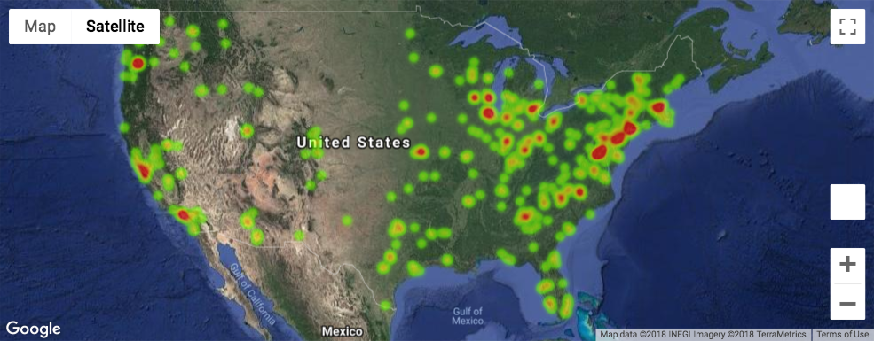

US Farmers' Markets Analysis

Farmers' markets are some of the most accessible ways to obtain fresh, healthy foods, and several areas in the US do not have access to them. For this reason, some classmates and I performed a series of analyses about farmers' markets in the US. These analyses include their locations, their product offerings, and the types of payment they accept. We also visualized several of these analyses in maps, bar charts, and scatter plots.
Latitude Data Webpage

Using Pandas and Matplotlib, I analyzed public weather data to determine whether latitude was related to any of several weather variables: temperature, humidity, cloudiness, or wind speed. I displayed these scatter plots on four separate web pages, each with their own analysis. I also used Bootstrap to ensure that users can easily navigate between analyses.